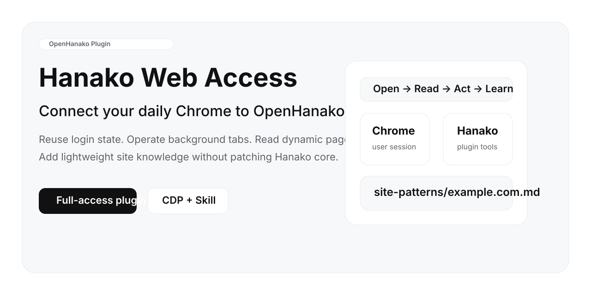
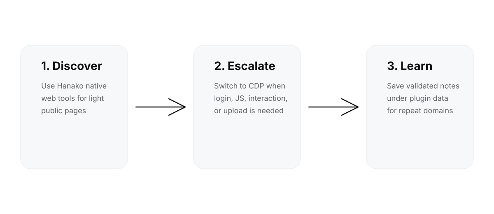

OpenHanako Plugin不是再开一个给 Agent 用的浏览器。是让 Hanako 直接接入你平时就在用的 Chrome，复用登录态，在后台开标签页，完成动态网页读取、站内搜索、点击、输入、上传，以及最基础的站点经验沉淀。
每次重开环境、重新登录、重新踩坑。对需要登录态的网站来说，这不是能力问题，是入口问题。
很多内容平台、后台系统、招聘站、社媒站内搜索，并不适合先 Search/Fetch 再补救。
轻任务继续用 Hanako 原生 web 工具；复杂网页切换到接管现有 Chrome 的 CDP 模式。这才合理。

通过 CDP 连接用户日常 Chrome，而不是强行拉起新的浏览器实例。登录态天然复用。
支持开标签页、读页、执行 JS、点击、输入、滚动、截图、上传文件、关闭标签页。
成功读取后按域名保存轻量经验，记录已验证的访问方式和基础事实，避免下一次又从零开始。
当静态抓取读不到正文，直接进入浏览器读取真实 DOM。
像人一样进入平台，在站内完成搜索、跳转和判断，而不是在搜索引擎外面打转。
点击、输入、滚动、截图、上传文件，这些都不是 fetch 能解决的问题。
| 场景 | 建议 | 原因 |
|---|---|---|
| 官网、博客、文档、公开静态页面 | 优先 Hanako 原生 web search / web fetch | 更轻、更快、代价更低 |
| 登录后页面、JS 重页面、社媒站内搜索 | 切到 Hanako Web Access | 静态工具经常天然无效 |
| 上传、发布、填写表单、多步交互 | 切到 Hanako Web Access | 这是浏览器自动化问题，不是抓取问题 |
因为 OpenHanako 更新很快。直接改 core / server / desktop，短期看更“原生”，长期看一定变成维护债。这个项目选择按官方插件体系接入：
不会。它是更重的一档。静态网页继续用原生工具，复杂网页再升级到这个插件。
默认不会。它只操作插件自己创建的标签页，不碰你原有标签页。
因为网页自动化最贵的不是点击，而是每次都重新试错。经验层的作用是让第二次访问不再像第一次那么陌生。
Hanako Web Access 不是要取代 Hanako 原生联网能力，而是给 Hanako 增加一个真正够用的重型浏览器档位：当静态工具已经不对路时，它让 Agent 进入你真实在用的 Chrome，把事情做完。